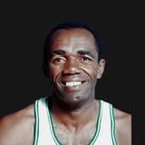

Bill Russell
Age at death
88
July 31, 2022
NBA seasons
13
1956-57 to 1968-69
Games
963
regular season
All-Star selections
12
Hall of Fame
Life
- Born
- Feb. 12, 1934, in Monroe, Louisiana
- Died
- July 31, 2022, in Mercer Island, Washington
- Age at death
- 88
- Height
- 6'10" (height and lifespan)
- Honors
- Naismith Basketball Hall of Fame; 12 NBA All-Star selections; NBA champion 11 times; MVP 5 times; All-NBA 11 times
Teams
regular-season games| Boston Celtics | 1956-57 to 1968-69 | 13 | 963 |
Age in context
- No. 169 longest-lived NBA player ever (records).
Born the same year (1934)
Also died at age 88

24 players died at 88; the most accomplished are shown.
Also born on February 12
Also died on July 31
Similar height
Of 26 NBA players within an inch of his height (6'10") born 1929–1939 whose outcome at 88 is known, 11.5% reached 88. How height and lifespan line up.
Keep exploring
★3 = number of NBA All-Star selections · HOF = Naismith Basketball Hall of Fame